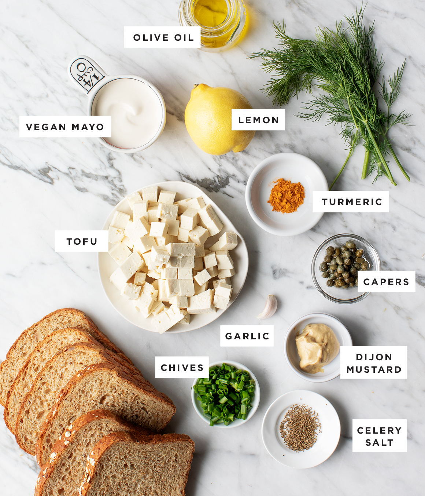
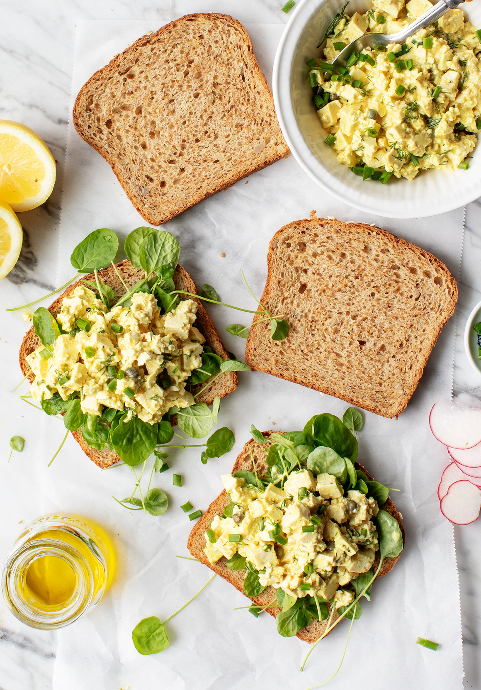

I’ve never really loved egg salad. Nice way to start a post about egg salad, right? But this isn’t just any egg salad sandwich: it’s bright from lemon, full of fresh herbs, and it gets a little briny kick from capers – it’s the best egg salad I’ve had! In fact, compared to traditional egg salads, which I feel can be a bit on the heavy side, this is light, fresh, and what I think egg salad wants to be.

If you look at the picture above, you’ll see that I actually first made this egg salad vegan, using tofu instead of hard boiled eggs. I think it’s equally good both ways. Even Jack, who hates egg salad more than almost anything, devoured the vegan version. Either way, the creamy filling really shines. Scoop it between slices of whole grain bread, and this is everything I want to eat for lunch every day in the spring.
To make my sandwiches extra springy, I assemble them with watercress and radish slices, and I top them with pretty pink pickled onions. Assemble and enjoy! The egg salad will keep in the fridge for 3 to 5 days, which makes these a perfect lunch that’s quick to assemble.

1. In a small bowl, whisk together the mayonnaise, olive oil, mustard, capers, lemon juice, garlic, turmeric, salt, and several grinds of black pepper.
2. If you're making this with eggs, gently fold them into the sauce. If you're using tofu, mix it in and then lightly crumble it with your hands, keeping some of the cubes intact. We're going for the texture of egg salad, not scrambled eggs.
3. Stir in the celery salt, dill, and chives. Chill until ready to serve.
4. Assemble the sandwiches with watercress or spring greens, a scoop of the egg salad, and pickled onions and radish slices, if desired.